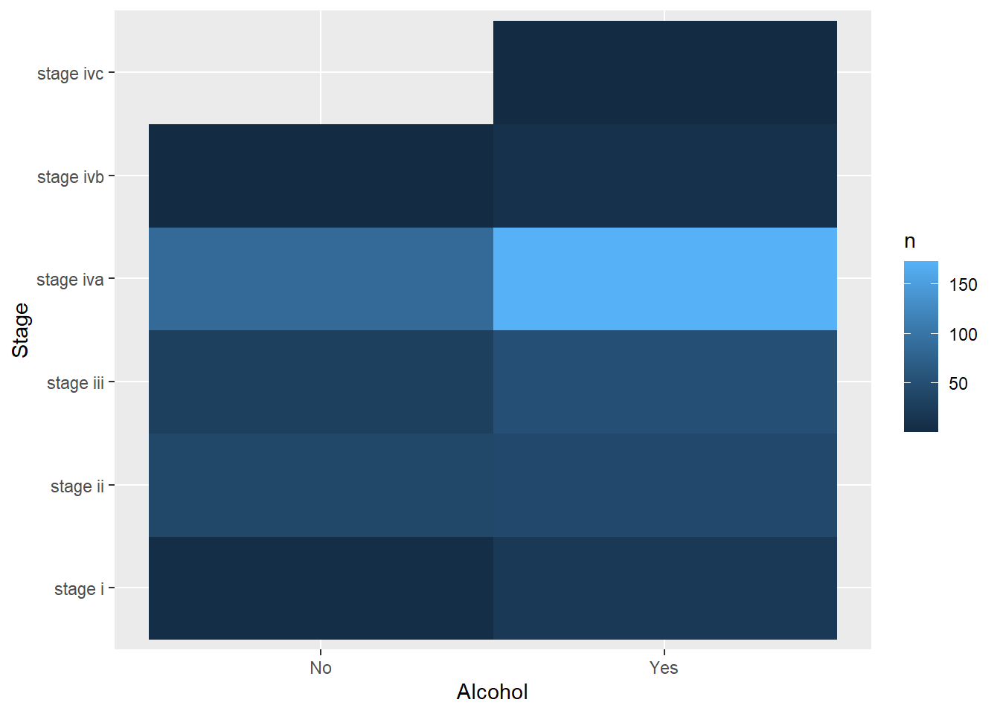
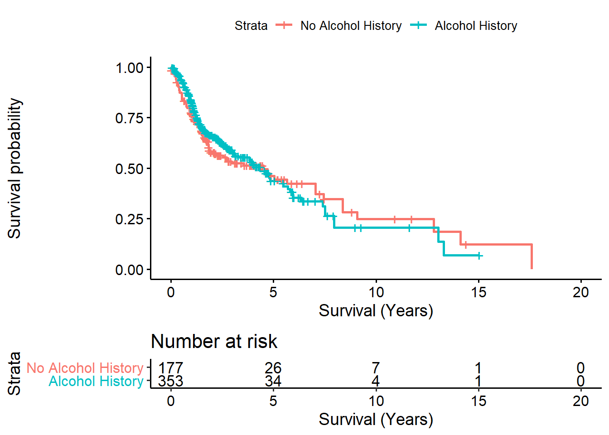

CMSC33750 - Homework 1
Last updated: 2020-10-01
Checks: 6 1
Knit directory: CMSC33750/
This reproducible R Markdown analysis was created with workflowr (version 1.6.2). The Checks tab describes the reproducibility checks that were applied when the results were created. The Past versions tab lists the development history.
The R Markdown file has unstaged changes. To know which version of the R Markdown file created these results, you’ll want to first commit it to the Git repo. If you’re still working on the analysis, you can ignore this warning. When you’re finished, you can run wflow_publish to commit the R Markdown file and build the HTML.
Great job! The global environment was empty. Objects defined in the global environment can affect the analysis in your R Markdown file in unknown ways. For reproduciblity it’s best to always run the code in an empty environment.
The command set.seed(20201001) was run prior to running the code in the R Markdown file. Setting a seed ensures that any results that rely on randomness, e.g. subsampling or permutations, are reproducible.
Great job! Recording the operating system, R version, and package versions is critical for reproducibility.
Nice! There were no cached chunks for this analysis, so you can be confident that you successfully produced the results during this run.
Great job! Using relative paths to the files within your workflowr project makes it easier to run your code on other machines.
Great! You are using Git for version control. Tracking code development and connecting the code version to the results is critical for reproducibility.
The results in this page were generated with repository version 8fc4415. See the Past versions tab to see a history of the changes made to the R Markdown and HTML files.
Note that you need to be careful to ensure that all relevant files for the analysis have been committed to Git prior to generating the results (you can use wflow_publish or wflow_git_commit). workflowr only checks the R Markdown file, but you know if there are other scripts or data files that it depends on. Below is the status of the Git repository when the results were generated:
Ignored files:
Ignored: .Rhistory
Ignored: .Rproj.user/
Untracked files:
Untracked: GDCdata/
Unstaged changes:
Modified: analysis/hw1.Rmd
Modified: analysis/index.Rmd
Note that any generated files, e.g. HTML, png, CSS, etc., are not included in this status report because it is ok for generated content to have uncommitted changes.
These are the previous versions of the repository in which changes were made to the R Markdown (analysis/hw1.Rmd) and HTML (docs/hw1.html) files. If you’ve configured a remote Git repository (see ?wflow_git_remote), click on the hyperlinks in the table below to view the files as they were in that past version.
| File | Version | Author | Date | Message |
|---|---|---|---|---|
| Rmd | 8fc4415 | Jovian Yu | 2020-10-01 | Initial commit, first homework assignment |
| html | 8fc4415 | Jovian Yu | 2020-10-01 | Initial commit, first homework assignment |
Setup
- Loading necessary libraries
Downloading GDC data
- TCGA head and neck cohort only
Data Exploration
- Listing all (clinical) metadata - some of this data is not particularly interesting/is missing, but some of the clinical data (extracted here) is meaningful
- Using history of alcohol use as a primary variable to examine here ** A breakdown of stage vs alcohol use (removing data where it isn’t reported) ** Survival curves based on alcohol use - no clear differences here
print(colnames(colData(data))) [1] "barcode" "patient"
[3] "sample" "shortLetterCode"
[5] "definition" "sample_submitter_id"
[7] "state" "submitter_id"
[9] "longest_dimension" "intermediate_dimension"
[11] "pathology_report_uuid" "shortest_dimension"
[13] "initial_weight" "sample_id"
[15] "sample_type_id" "sample_type"
[17] "days_to_collection" "tissue_type"
[19] "oct_embedded" "is_ffpe"
[21] "tumor_stage" "prior_malignancy"
[23] "age_at_diagnosis" "diagnosis_id"
[25] "days_to_diagnosis" "icd_10_code"
[27] "synchronous_malignancy" "tumor_grade"
[29] "prior_treatment" "primary_diagnosis"
[31] "days_to_last_follow_up" "site_of_resection_or_biopsy"
[33] "classification_of_tumor" "ajcc_clinical_n"
[35] "ajcc_clinical_stage" "morphology"
[37] "ajcc_clinical_t" "year_of_diagnosis"
[39] "ajcc_pathologic_n" "tissue_or_organ_of_origin"
[41] "ajcc_staging_system_edition" "ajcc_pathologic_stage"
[43] "ajcc_clinical_m" "ajcc_pathologic_t"
[45] "last_known_disease_status" "progression_or_recurrence"
[47] "treatments" "ajcc_pathologic_m"
[49] "alcohol_history" "cigarettes_per_day"
[51] "exposure_id" "years_smoked"
[53] "pack_years_smoked" "days_to_death"
[55] "vital_status" "year_of_birth"
[57] "race" "ethnicity"
[59] "age_at_index" "year_of_death"
[61] "gender" "days_to_birth"
[63] "demographic_id" "bcr_patient_barcode"
[65] "name" "released"
[67] "project_id" "disease_type"
[69] "releasable" "primary_site"
[71] "paper_patient" "paper_RNA"
[73] "paper_Methylation" "paper_RPPA"
[75] "paper_miRNA" "paper_Copy.Number"
[77] "paper_PARADIGM" tib_alc_vs_stage <- tibble(Alcohol = factor(data$alcohol_history), Stage = factor(data$tumor_stage)) %>%
filter(Alcohol != "Not Reported", Stage != "not reported") %>%
group_by(Alcohol, Stage) %>%
summarise(n = n())`summarise()` regrouping output by 'Alcohol' (override with `.groups` argument)tib_alc_vs_stage %>%
ggplot(aes(x = Alcohol, y = Stage, fill = n)) +
geom_raster()
tib_survival_alcohol <- tibble(
days_to_death = data$days_to_death,
days_to_last_follow_up = data$days_to_last_follow_up,
vital_status = factor(data$vital_status),
alcohol = factor(data$alcohol_history)
) %>%
mutate(
vital_status = ifelse(vital_status == "Alive", 0, 1),
years = as.numeric(ifelse(vital_status == 1, days_to_death, days_to_last_follow_up))/365.0,
alcohol = ifelse(alcohol == "Yes", 1, ifelse(alcohol == "No", 0, NA_character_))
) %>%
select(vital_status, alcohol, years) %>%
na.omit()
fit_survival_alcohol <- survfit(Surv(years, vital_status) ~ alcohol, data = tib_survival_alcohol)
ggsurvplot(fit_survival_alcohol, data = tib_survival_alcohol, risk.table = TRUE,
legend.labs = c("No Alcohol History", "Alcohol History"),
xlab = "Survival (Years)")Warning: Vectorized input to `element_text()` is not officially supported.
Results may be unexpected or may change in future versions of ggplot2.
Transcript Counts
- Showing counts here, subsetting on the first on only patients with Stage IVB disease ** Generates a reasonably sized subset of 11 patients with an interesting phenotype
- Plotting with ggbio (to allow for direct manipulation of a SummarizedExperiment object with ggplot) with a log transform of both axes to make the visualization reasonable
list_stageivb <- data$tumor_stage == "stage ivb"
print(summary(list_stageivb)) Mode FALSE TRUE
logical 535 11 data[, list_stageivb] %>%
ggplot(aes(x = value), assay.id = 1L, environment = parent.frame()) +
geom_histogram(na.rm = TRUE) +
scale_x_log10(
breaks = scales::trans_breaks("log10", function(x) 10^x),
labels = scales::trans_format("log10", scales::math_format(10^.x))
) +
scale_y_log10(
breaks = scales::trans_breaks("log10", function(x) 10^x),
labels = scales::trans_format("log10", scales::math_format(10^.x))
) +
annotation_logticks() +
theme_bw() +
labs(title = "Histogram of RNA Transcript Counts in the\nTCGA H&N Patients with Stage IVB Disease") + xlab("Number of Transcripts") + ylab("Number of Genes")Warning: Transformation introduced infinite values in continuous x-axis`stat_bin()` using `bins = 30`. Pick better value with `binwidth`.
Session Info
sessioninfo::package_info() package * version date lib source
abind 1.4-5 2016-07-21 [1] CRAN (R 4.0.0)
AnnotationDbi 1.50.3 2020-07-25 [1] Bioconductor
AnnotationFilter 1.12.0 2020-04-27 [1] Bioconductor
askpass 1.1 2019-01-13 [1] CRAN (R 4.0.0)
assertthat 0.2.1 2019-03-21 [1] CRAN (R 4.0.0)
backports 1.1.10 2020-09-15 [1] CRAN (R 4.0.2)
base64enc 0.1-3 2015-07-28 [1] CRAN (R 4.0.0)
Biobase * 2.48.0 2020-04-27 [1] Bioconductor
BiocFileCache 1.12.1 2020-08-04 [1] Bioconductor
BiocGenerics * 0.34.0 2020-04-27 [1] Bioconductor
BiocManager * 1.30.10 2019-11-16 [1] CRAN (R 4.0.2)
BiocParallel 1.22.0 2020-04-27 [1] Bioconductor
biomaRt 2.44.1 2020-06-17 [1] Bioconductor
Biostrings 2.56.0 2020-04-27 [1] Bioconductor
biovizBase 1.36.0 2020-04-27 [1] Bioconductor
bit 4.0.4 2020-08-04 [1] CRAN (R 4.0.2)
bit64 4.0.5 2020-08-30 [1] CRAN (R 4.0.2)
bitops 1.0-6 2013-08-17 [1] CRAN (R 4.0.0)
blob 1.2.1 2020-01-20 [1] CRAN (R 4.0.0)
broom 0.7.0 2020-07-09 [1] CRAN (R 4.0.2)
BSgenome 1.56.0 2020-04-27 [1] Bioconductor
car 3.0-10 2020-09-29 [1] CRAN (R 4.0.2)
carData 3.0-4 2020-05-22 [1] CRAN (R 4.0.0)
cellranger 1.1.0 2016-07-27 [1] CRAN (R 4.0.0)
checkmate 2.0.0 2020-02-06 [1] CRAN (R 4.0.2)
cli 2.0.2 2020-02-28 [1] CRAN (R 4.0.0)
cluster 2.1.0 2019-06-19 [2] CRAN (R 4.0.2)
colorspace 1.4-1 2019-03-18 [1] CRAN (R 4.0.0)
crayon 1.3.4 2017-09-16 [1] CRAN (R 4.0.0)
curl 4.3 2019-12-02 [1] CRAN (R 4.0.0)
data.table 1.13.0 2020-07-24 [1] CRAN (R 4.0.2)
DBI 1.1.0 2019-12-15 [1] CRAN (R 4.0.0)
dbplyr 1.4.4 2020-05-27 [1] CRAN (R 4.0.0)
DelayedArray * 0.14.1 2020-07-15 [1] Bioconductor
dichromat 2.0-0 2013-01-24 [1] CRAN (R 4.0.0)
digest 0.6.25 2020-02-23 [1] CRAN (R 4.0.0)
downloader 0.4 2015-07-09 [1] CRAN (R 4.0.2)
dplyr * 1.0.2 2020-08-18 [1] CRAN (R 4.0.2)
DT * 0.15 2020-08-05 [1] CRAN (R 4.0.2)
ellipsis 0.3.1 2020-05-15 [1] CRAN (R 4.0.0)
ensembldb 2.12.1 2020-05-06 [1] Bioconductor
evaluate 0.14 2019-05-28 [1] CRAN (R 4.0.0)
fansi 0.4.1 2020-01-08 [1] CRAN (R 4.0.0)
farver 2.0.3 2020-01-16 [1] CRAN (R 4.0.0)
forcats * 0.5.0 2020-03-01 [1] CRAN (R 4.0.0)
foreign 0.8-80 2020-05-24 [2] CRAN (R 4.0.2)
Formula 1.2-3 2018-05-03 [1] CRAN (R 4.0.0)
fs 1.5.0 2020-07-31 [1] CRAN (R 4.0.2)
generics 0.0.2 2018-11-29 [1] CRAN (R 4.0.0)
GenomeInfoDb * 1.24.2 2020-06-15 [1] Bioconductor
GenomeInfoDbData 1.2.3 2020-04-28 [1] Bioconductor
GenomicAlignments 1.24.0 2020-04-27 [1] Bioconductor
GenomicFeatures 1.40.1 2020-07-08 [1] Bioconductor
GenomicRanges * 1.40.0 2020-04-27 [1] Bioconductor
GGally 2.0.0 2020-06-06 [1] CRAN (R 4.0.2)
ggbio * 1.36.0 2020-04-27 [1] Bioconductor
ggplot2 * 3.3.2 2020-06-19 [1] CRAN (R 4.0.2)
ggpubr * 0.4.0 2020-06-27 [1] CRAN (R 4.0.2)
ggsignif 0.6.0 2019-08-08 [1] CRAN (R 4.0.2)
git2r 0.27.1 2020-05-03 [1] CRAN (R 4.0.0)
glue 1.4.2 2020-08-27 [1] CRAN (R 4.0.2)
graph 1.66.0 2020-04-27 [1] Bioconductor
gridExtra 2.3 2017-09-09 [1] CRAN (R 4.0.0)
gtable 0.3.0 2019-03-25 [1] CRAN (R 4.0.0)
haven 2.3.1 2020-06-01 [1] CRAN (R 4.0.0)
Hmisc 4.4-1 2020-08-10 [1] CRAN (R 4.0.0)
hms 0.5.3 2020-01-08 [1] CRAN (R 4.0.0)
htmlTable 2.1.0 2020-09-16 [1] CRAN (R 4.0.2)
htmltools 0.5.0 2020-06-16 [1] CRAN (R 4.0.2)
htmlwidgets 1.5.1 2019-10-08 [1] CRAN (R 4.0.2)
httpuv 1.5.4 2020-06-06 [1] CRAN (R 4.0.0)
httr 1.4.2 2020-07-20 [1] CRAN (R 4.0.2)
IRanges * 2.22.2 2020-05-21 [1] Bioconductor
jpeg 0.1-8.1 2019-10-24 [1] CRAN (R 4.0.0)
jsonlite 1.7.1 2020-09-07 [1] CRAN (R 4.0.0)
km.ci 0.5-2 2009-08-30 [1] CRAN (R 4.0.2)
KMsurv 0.1-5 2012-12-03 [1] CRAN (R 4.0.0)
knitr 1.30 2020-09-22 [1] CRAN (R 4.0.2)
labeling 0.3 2014-08-23 [1] CRAN (R 4.0.0)
later 1.1.0.1 2020-06-05 [1] CRAN (R 4.0.0)
lattice 0.20-41 2020-04-02 [2] CRAN (R 4.0.2)
latticeExtra 0.6-29 2019-12-19 [1] CRAN (R 4.0.2)
lazyeval 0.2.2 2019-03-15 [1] CRAN (R 4.0.0)
lifecycle 0.2.0 2020-03-06 [1] CRAN (R 4.0.0)
lubridate 1.7.9 2020-06-08 [1] CRAN (R 4.0.0)
magrittr 1.5 2014-11-22 [1] CRAN (R 4.0.0)
Matrix 1.2-18 2019-11-27 [2] CRAN (R 4.0.2)
matrixStats * 0.57.0 2020-09-25 [1] CRAN (R 4.0.2)
memoise 1.1.0 2017-04-21 [1] CRAN (R 4.0.0)
modelr 0.1.8 2020-05-19 [1] CRAN (R 4.0.0)
munsell 0.5.0 2018-06-12 [1] CRAN (R 4.0.0)
nnet 7.3-14 2020-04-26 [2] CRAN (R 4.0.2)
openssl 1.4.3 2020-09-18 [1] CRAN (R 4.0.2)
openxlsx 4.2.2 2020-09-17 [1] CRAN (R 4.0.2)
OrganismDbi 1.30.0 2020-04-28 [1] Bioconductor
pillar 1.4.6 2020-07-10 [1] CRAN (R 4.0.2)
pkgconfig 2.0.3 2019-09-22 [1] CRAN (R 4.0.0)
plyr 1.8.6 2020-03-03 [1] CRAN (R 4.0.0)
png 0.1-7 2013-12-03 [1] CRAN (R 4.0.0)
prettyunits 1.1.1 2020-01-24 [1] CRAN (R 4.0.0)
progress 1.2.2 2019-05-16 [1] CRAN (R 4.0.0)
promises 1.1.1 2020-06-09 [1] CRAN (R 4.0.0)
ProtGenerics 1.20.0 2020-04-27 [1] Bioconductor
purrr * 0.3.4 2020-04-17 [1] CRAN (R 4.0.0)
R.methodsS3 1.8.1 2020-08-26 [1] CRAN (R 4.0.2)
R.oo 1.24.0 2020-08-26 [1] CRAN (R 4.0.2)
R.utils 2.10.1 2020-08-26 [1] CRAN (R 4.0.2)
R6 2.4.1 2019-11-12 [1] CRAN (R 4.0.0)
rappdirs 0.3.1 2016-03-28 [1] CRAN (R 4.0.0)
RBGL 1.64.0 2020-04-27 [1] Bioconductor
RColorBrewer 1.1-2 2014-12-07 [1] CRAN (R 4.0.0)
Rcpp 1.0.5 2020-07-06 [1] CRAN (R 4.0.2)
RCurl 1.98-1.2 2020-04-18 [1] CRAN (R 4.0.0)
readr * 1.3.1 2018-12-21 [1] CRAN (R 4.0.0)
readxl 1.3.1 2019-03-13 [1] CRAN (R 4.0.0)
reprex 0.3.0 2019-05-16 [1] CRAN (R 4.0.0)
reshape 0.8.8 2018-10-23 [1] CRAN (R 4.0.2)
reshape2 1.4.4 2020-04-09 [1] CRAN (R 4.0.0)
rio 0.5.16 2018-11-26 [1] CRAN (R 4.0.0)
rlang 0.4.7 2020-07-09 [1] CRAN (R 4.0.2)
rmarkdown 2.4 2020-09-30 [1] CRAN (R 4.0.2)
rpart 4.1-15 2019-04-12 [2] CRAN (R 4.0.2)
rprojroot 1.3-2 2018-01-03 [1] CRAN (R 4.0.0)
Rsamtools 2.4.0 2020-04-27 [1] Bioconductor
RSQLite 2.2.1 2020-09-30 [1] CRAN (R 4.0.2)
rstatix 0.6.0 2020-06-18 [1] CRAN (R 4.0.2)
rstudioapi 0.11 2020-02-07 [1] CRAN (R 4.0.0)
rtracklayer 1.48.0 2020-04-27 [1] Bioconductor
rvest 0.3.6 2020-07-25 [1] CRAN (R 4.0.2)
S4Vectors * 0.26.1 2020-05-16 [1] Bioconductor
scales 1.1.1 2020-05-11 [1] CRAN (R 4.0.0)
sessioninfo 1.1.1 2018-11-05 [1] CRAN (R 4.0.0)
stringi 1.5.3 2020-09-09 [1] CRAN (R 4.0.2)
stringr * 1.4.0 2019-02-10 [1] CRAN (R 4.0.0)
SummarizedExperiment * 1.18.2 2020-07-09 [1] Bioconductor
survival * 3.2-7 2020-09-28 [1] CRAN (R 4.0.2)
survminer * 0.4.8 2020-07-25 [1] CRAN (R 4.0.2)
survMisc 0.5.5 2018-07-05 [1] CRAN (R 4.0.2)
TCGAbiolinks * 2.16.4 2020-09-08 [1] Bioconductor
tibble * 3.0.3 2020-07-10 [1] CRAN (R 4.0.2)
tidyr * 1.1.2 2020-08-27 [1] CRAN (R 4.0.2)
tidyselect 1.1.0 2020-05-11 [1] CRAN (R 4.0.0)
tidyverse * 1.3.0 2019-11-21 [1] CRAN (R 4.0.2)
VariantAnnotation 1.34.0 2020-04-27 [1] Bioconductor
vctrs 0.3.4 2020-08-29 [1] CRAN (R 4.0.2)
whisker 0.4 2019-08-28 [1] CRAN (R 4.0.0)
withr 2.3.0 2020-09-22 [1] CRAN (R 4.0.2)
workflowr * 1.6.2 2020-04-30 [1] CRAN (R 4.0.2)
xfun 0.17 2020-09-09 [1] CRAN (R 4.0.2)
XML 3.99-0.5 2020-07-23 [1] CRAN (R 4.0.2)
xml2 1.3.2 2020-04-23 [1] CRAN (R 4.0.0)
xtable 1.8-4 2019-04-21 [1] CRAN (R 4.0.0)
XVector 0.28.0 2020-04-27 [1] Bioconductor
yaml 2.2.1 2020-02-01 [1] CRAN (R 4.0.0)
zip 2.1.1 2020-08-27 [1] CRAN (R 4.0.2)
zlibbioc 1.34.0 2020-04-27 [1] Bioconductor
zoo 1.8-8 2020-05-02 [1] CRAN (R 4.0.0)
[1] Z:/Documents/R/win-library/4.0
[2] C:/Program Files/R/R-4.0.2/library
sessionInfo()R version 4.0.2 (2020-06-22)
Platform: x86_64-w64-mingw32/x64 (64-bit)
Running under: Windows 10 x64 (build 18362)
Matrix products: default
locale:
[1] LC_COLLATE=English_United States.1252
[2] LC_CTYPE=English_United States.1252
[3] LC_MONETARY=English_United States.1252
[4] LC_NUMERIC=C
[5] LC_TIME=English_United States.1252
system code page: 932
attached base packages:
[1] parallel stats4 stats graphics grDevices utils datasets
[8] methods base
other attached packages:
[1] ggbio_1.36.0 survminer_0.4.8
[3] ggpubr_0.4.0 survival_3.2-7
[5] SummarizedExperiment_1.18.2 DelayedArray_0.14.1
[7] matrixStats_0.57.0 Biobase_2.48.0
[9] GenomicRanges_1.40.0 GenomeInfoDb_1.24.2
[11] IRanges_2.22.2 S4Vectors_0.26.1
[13] BiocGenerics_0.34.0 DT_0.15
[15] forcats_0.5.0 stringr_1.4.0
[17] dplyr_1.0.2 purrr_0.3.4
[19] readr_1.3.1 tidyr_1.1.2
[21] tibble_3.0.3 ggplot2_3.3.2
[23] tidyverse_1.3.0 TCGAbiolinks_2.16.4
[25] BiocManager_1.30.10 workflowr_1.6.2
loaded via a namespace (and not attached):
[1] readxl_1.3.1 backports_1.1.10 Hmisc_4.4-1
[4] BiocFileCache_1.12.1 plyr_1.8.6 lazyeval_0.2.2
[7] splines_4.0.2 BiocParallel_1.22.0 digest_0.6.25
[10] ensembldb_2.12.1 htmltools_0.5.0 fansi_0.4.1
[13] checkmate_2.0.0 magrittr_1.5 memoise_1.1.0
[16] BSgenome_1.56.0 cluster_2.1.0 openxlsx_4.2.2
[19] Biostrings_2.56.0 modelr_0.1.8 R.utils_2.10.1
[22] askpass_1.1 prettyunits_1.1.1 jpeg_0.1-8.1
[25] colorspace_1.4-1 blob_1.2.1 rvest_0.3.6
[28] rappdirs_0.3.1 haven_2.3.1 xfun_0.17
[31] crayon_1.3.4 RCurl_1.98-1.2 jsonlite_1.7.1
[34] graph_1.66.0 VariantAnnotation_1.34.0 zoo_1.8-8
[37] glue_1.4.2 gtable_0.3.0 zlibbioc_1.34.0
[40] XVector_0.28.0 car_3.0-10 abind_1.4-5
[43] scales_1.1.1 DBI_1.1.0 GGally_2.0.0
[46] rstatix_0.6.0 Rcpp_1.0.5 xtable_1.8-4
[49] progress_1.2.2 htmlTable_2.1.0 foreign_0.8-80
[52] bit_4.0.4 OrganismDbi_1.30.0 km.ci_0.5-2
[55] Formula_1.2-3 htmlwidgets_1.5.1 httr_1.4.2
[58] RColorBrewer_1.1-2 ellipsis_0.3.1 farver_2.0.3
[61] pkgconfig_2.0.3 reshape_0.8.8 XML_3.99-0.5
[64] R.methodsS3_1.8.1 nnet_7.3-14 dbplyr_1.4.4
[67] labeling_0.3 tidyselect_1.1.0 rlang_0.4.7
[70] reshape2_1.4.4 later_1.1.0.1 AnnotationDbi_1.50.3
[73] munsell_0.5.0 cellranger_1.1.0 tools_4.0.2
[76] downloader_0.4 cli_2.0.2 generics_0.0.2
[79] RSQLite_2.2.1 broom_0.7.0 evaluate_0.14
[82] yaml_2.2.1 knitr_1.30 bit64_4.0.5
[85] fs_1.5.0 zip_2.1.1 survMisc_0.5.5
[88] AnnotationFilter_1.12.0 RBGL_1.64.0 whisker_0.4
[91] R.oo_1.24.0 xml2_1.3.2 biomaRt_2.44.1
[94] compiler_4.0.2 rstudioapi_0.11 curl_4.3
[97] png_0.1-7 ggsignif_0.6.0 reprex_0.3.0
[100] stringi_1.5.3 GenomicFeatures_1.40.1 lattice_0.20-41
[103] ProtGenerics_1.20.0 Matrix_1.2-18 KMsurv_0.1-5
[106] vctrs_0.3.4 pillar_1.4.6 lifecycle_0.2.0
[109] data.table_1.13.0 bitops_1.0-6 rtracklayer_1.48.0
[112] httpuv_1.5.4 R6_2.4.1 latticeExtra_0.6-29
[115] promises_1.1.1 gridExtra_2.3 rio_0.5.16
[118] sessioninfo_1.1.1 dichromat_2.0-0 assertthat_0.2.1
[121] openssl_1.4.3 rprojroot_1.3-2 withr_2.3.0
[124] GenomicAlignments_1.24.0 Rsamtools_2.4.0 GenomeInfoDbData_1.2.3
[127] hms_0.5.3 grid_4.0.2 rpart_4.1-15
[130] rmarkdown_2.4 carData_3.0-4 biovizBase_1.36.0
[133] git2r_0.27.1 lubridate_1.7.9 base64enc_0.1-3